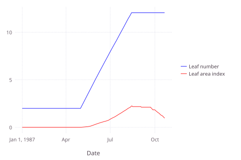
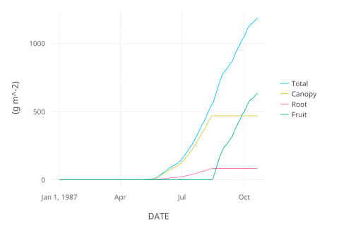
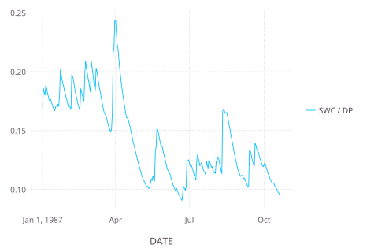
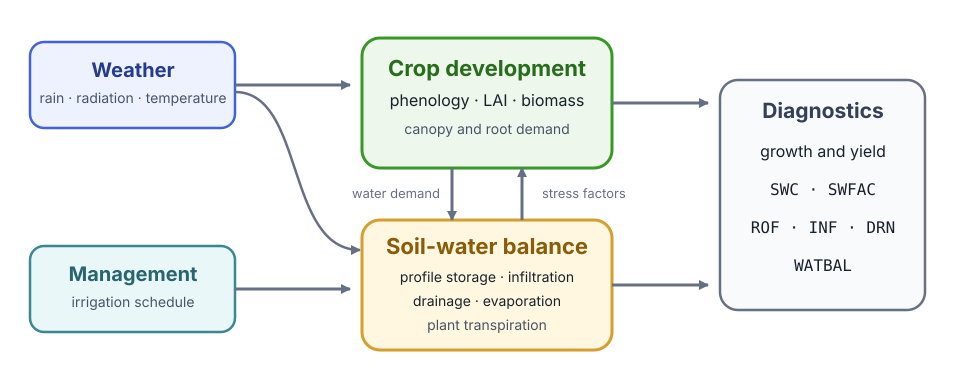

SimpleCrop
SimpleCrop.jl is a compact, executable crop model assembled from phenology, canopy, biomass partitioning, weather, and soil-water components. This tutorial follows the short integration case in Cropbox's test/examples/simplecrop.jl, then reads its output from the perspective of the crop as a whole.
SimpleCrop follows the intentionally simplified model in the official DSSAT teaching material, A Modular Approach to Structure Crop Models. It is useful for learning how components exchange values and how a complete simulation is organized; it is not a fully parameterized production model.
Load the example inputs
Add the model and the table-reading packages to your active Julia environment:
using Pkg
Pkg.add(["Cropbox", "SimpleCrop", "CSV", "DataFrames"])The package test data contain daily weather and irrigation tables. Run the remaining blocks in order in the same session.
using Cropbox
using SimpleCrop
using CSV
using DataFrames
loaddata(name) = CSV.File(
joinpath(dirname(pathof(SimpleCrop)), "../test/data", name)
) |> DataFrame
weather = loaddata("weather.csv")
irrigation = loaddata("irrigation.csv")
(weather = first(weather, 3), irrigation = first(irrigation, 3))(weather = 3×6 DataFrame
Row │ DATE (:Date) SRAD (MJ/m^2/d) TMAX (°C) TMIN (°C) RAIN (mm/d) PAR ( ⋯
│ Date Float64 Float64 Float64 Float64 Float ⋯
─────┼──────────────────────────────────────────────────────────────────────────
1 │ 1986-01-01 6.3 22.8 13.9 22.6 ⋯
2 │ 1986-01-02 6.3 20.6 12.8 0.0
3 │ 1986-01-03 6.2 20.6 13.3 0.3
1 column omitted, irrigation = 3×2 DataFrame
Row │ DATE (:Date) IRR (mm/d)
│ Date Int64
─────┼──────────────────────────
1 │ 1986-01-01 0
2 │ 1986-01-02 0
3 │ 1986-01-03 0)The annotated CSV headers retain dates, units, and column types. Cropbox normalizes them when the corresponding provide and drive variables are constructed.
Configure and run the model
config = @config (
Clock => :step => 1u"d",
Calendar => :init => ZonedDateTime(1987, 1, 1, tz"UTC"),
SimpleCrop.Weather => :weather_data => weather,
SimpleCrop.SoilWater => :irrigation_data => irrigation,
)
result = simulate(SimpleCrop.Model; config, stop = :endsim)
(rows = nrow(result), start = first(result.DATE), finish = last(result.DATE))(rows = 294, start = Date("1987-01-01"), finish = Date("1987-10-21"))The model sets the endsim flag when the run is complete. You don't need to know the number of days in advance.
Read development and canopy growth
N is leaf number and LAI is leaf area index. They provide a quick check that phenology and canopy development are advancing together.
visualize(result, :DATE, [:N, :LAI];
kind = :line,
names = ["Leaf number", "Leaf area index"],
colors = [:blue, :red],
xlab = "Date",
)
In this run, leaf number levels off at about 12, while leaf area index falls from a peak of 2.25 to 0.97. Having formed the same number of leaves does not mean the canopy still has the same leaf area.
Read biomass partitioning
W is total dry biomass. The component pools Wc, Wr, and Wf represent canopy, root, and fruit biomass.
visualize(result,
:DATE,
[:W, :Wc, :Wr, :Wf];
names = ["Total", "Canopy", "Root", "Fruit"],
kind = :line,
)
Read these curves together with development and LAI: a change in allocation is part of the crop's developmental program, not just a final yield calculation.
Check one coupled environmental state
The integration test also plots stored soil water SWC divided by profile depth DP.
visualize(result,
:DATE,
:(SWC / DP);
yunit = u"mm^3/mm^3",
kind = :line,
)
This plot confirms that the environmental component is connected and evolving during the crop run. It is not intended as a stand-alone validation of a layered soil-water algorithm. For the separate multi-layer implementation in Cropbox's own test suite, continue with Soil Water Transport.
Optional: inspect how the parts fit together

Weather and management supply the environment. Crop development, canopy, biomass, and below-ground water balance advance together, while diagnostic variables expose the resulting state.
The structure-plot forms of visualize below were added after Cropbox v0.4.2. If you are using that release, you can skip them: none of the crop output above requires a structure plot. See Installation if you want to try the development version.
Start with the system hierarchy:
visualize(SimpleCrop.Model; kind = :hierarchy)
-->
<!-- Pages: 1 -->
<svg width="245pt" height="126pt"
viewBox="0.00 0.00 245.00 126.00" xmlns="http://www.w3.org/2000/svg" xmlns:xlink="http://www.w3.org/1999/xlink">
<g id="graph0" class="graph" transform="scale(1 1) rotate(0) translate(4 122.35)">
<polygon fill="white" stroke="none" points="-4,4 -4,-122.35 240.69,-122.35 240.69,4 -4,4"/>
<!-- 2&%2345;>1 -->
<g id="edge1" class="edge">
<title>2&%2345;>1</title>
<path fill="none" stroke="black" stroke-width="0.2" stroke-dasharray="5,2" d="M29.71,-67.03C47.01,-75.04 75.93,-88.43 94.01,-96.81"/>
<polygon fill="black" stroke="black" stroke-width="0.2" points="93.34,-97.27 95.45,-97.47 93.93,-96 93.34,-97.27"/>
</g>
<!-- 3&%2345;>1 -->
<g id="edge2" class="edge">
<title>3&%2345;>1</title>
<path fill="none" stroke="black" stroke-width="0.2" stroke-dasharray="5,2" d="M73.63,-66.84C81.25,-74.64 94.04,-87.73 102.32,-96.2"/>
<polygon fill="black" stroke="black" stroke-width="0.2" points="101.8,-96.67 103.7,-97.61 102.81,-95.69 101.8,-96.67"/>
</g>
<!-- 4&%2345;>1 -->
<g id="edge3" class="edge">
<title>4&%2345;>1</title>
<path fill="none" stroke="black" stroke-width="0.2" stroke-dasharray="5,2" d="M142.68,-66.84C135.94,-74.64 124.64,-87.73 117.32,-96.2"/>
<polygon fill="black" stroke="black" stroke-width="0.2" points="116.89,-95.63 116.11,-97.6 117.95,-96.54 116.89,-95.63"/>
</g>
<!-- 5&%2345;>1 -->
<g id="edge4" class="edge">
<title>5&%2345;>1</title>
<path fill="none" stroke="black" stroke-width="0.2" d="M127.86,-21.11C124.44,-37.3 115.8,-78.22 112.06,-95.95"/>
<polygon fill="black" stroke="black" stroke-width="0.2" points="111.42,-95.59 111.69,-97.69 112.79,-95.88 111.42,-95.59"/>
</g>
<!-- 5&%2345;>4 -->
<g id="edge5" class="edge">
<title>5&%2345;>4</title>
<path fill="none" stroke="black" stroke-width="0.2" d="M132.09,-20.84C135.4,-28.51 140.92,-41.29 144.58,-49.77"/>
<polygon fill="black" stroke="black" stroke-width="0.2" points="143.91,-49.99 145.35,-51.55 145.2,-49.44 143.91,-49.99"/>
</g>
<!-- 6&%2345;>1 -->
<g id="edge6" class="edge">
<title>6&%2345;>1</title>
<path fill="none" stroke="black" stroke-width="0.2" stroke-dasharray="5,2" d="M193.4,-67.03C175.56,-75.04 145.73,-88.43 127.08,-96.81"/>
<polygon fill="black" stroke="black" stroke-width="0.2" points="127.12,-96.02 125.59,-97.48 127.7,-97.3 127.12,-96.02"/>
</g>
<!-- 1 -->
<g id="node1" class="node">
<title>1</title>
<text xml:space="preserve" text-anchor="start" x="97.16" y="-103.42" font-family="Courier,monospace" font-weight="bold" font-size="9.00">Model</text>
</g>
<!-- 2 -->
<g id="node2" class="node">
<title>2</title>
<text xml:space="preserve" text-anchor="start" x="2.16" y="-57.42" font-family="Courier,monospace" font-weight="bold" font-size="9.00">Plant</text>
</g>
<!-- 3 -->
<g id="node3" class="node">
<title>3</title>
<text xml:space="preserve" text-anchor="start" x="43.66" y="-57.42" font-family="Courier,monospace" font-weight="bold" font-size="9.00">SoilWater</text>
</g>
<!-- 4 -->
<g id="node4" class="node">
<title>4</title>
<text xml:space="preserve" text-anchor="start" x="129.91" y="-57.42" font-family="Courier,monospace" font-weight="bold" font-size="9.00">Weather</text>
</g>
<!-- 5 -->
<g id="node5" class="node">
<title>5</title>
<text xml:space="preserve" text-anchor="start" x="108.28" y="-11.42" font-family="Courier,monospace" font-weight="bold" font-size="9.00">Calendar</text>
</g>
<!-- 6 -->
<g id="node6" class="node">
<title>6</title>
<text xml:space="preserve" text-anchor="start" x="182.03" y="-57.42" font-family="Courier,monospace" font-weight="bold" font-size="9.00">Controller</text>
</g>
</g>
</svg>
)
Then inspect the direct inputs to potential growth Pg:
visualize(SimpleCrop.Model, :Pg; direction = :up)
-->
<!-- Pages: 1 -->
<svg width="246pt" height="121pt"
viewBox="0.00 0.00 246.00 121.00" xmlns="http://www.w3.org/2000/svg" xmlns:xlink="http://www.w3.org/1999/xlink">
<g id="graph0" class="graph" transform="scale(1 1) rotate(0) translate(4 116.74)">
<polygon fill="white" stroke="none" points="-4,4 -4,-116.74 241.81,-116.74 241.81,4 -4,4"/>
<!-- 1&%2345;>4 -->
<g id="edge1" class="edge">
<title>1&%2345;>4</title>
<path fill="none" stroke="black" stroke-width="0.2" stroke-dasharray="1,5" d="M32.95,-97.22C30.48,-93.37 27.36,-88.51 24.72,-84.42"/>
<polygon fill="none" stroke="black" stroke-width="0.2" points="23.01,-83.23 24.36,-82.37 25.22,-83.71 23.87,-84.58 23.01,-83.23"/>
<polyline fill="none" stroke="black" stroke-width="0.2" points="24.55,-84.15 24.76,-84.48"/>
</g>
<!-- 1&%2345;>6 -->
<g id="edge2" class="edge">
<title>1&%2345;>6</title>
<path fill="none" stroke="black" stroke-width="0.2" stroke-dasharray="1,5" d="M39.38,-97.23C42.66,-86.47 49.06,-65.48 52.67,-53.65"/>
<polygon fill="none" stroke="black" stroke-width="0.2" points="52.48,-51.55 54.01,-52.02 53.54,-53.55 52.01,-53.08 52.48,-51.55"/>
<polyline fill="none" stroke="black" stroke-width="0.2" points="52.77,-53.32 52.66,-53.7"/>
</g>
<!-- 2&%2345;>7 -->
<g id="edge3" class="edge">
<title>2&%2345;>7</title>
<path fill="none" stroke="black" stroke-width="0.2" d="M89.47,-36.52C86.53,-31.58 82.46,-24.73 79.28,-19.37"/>
<polygon fill="black" stroke="black" stroke-width="0.2" points="79.93,-19.09 78.31,-17.73 78.72,-19.8 79.93,-19.09"/>
</g>
<!-- 3&%2345;>7 -->
<g id="edge4" class="edge">
<title>3&%2345;>7</title>
<path fill="none" stroke="black" stroke-width="0.2" d="M123.46,-36.37C111.63,-30.26 94.34,-21.34 83.73,-15.86"/>
<polygon fill="black" stroke="black" stroke-width="0.2" points="84.07,-15.25 81.97,-14.95 83.43,-16.49 84.07,-15.25"/>
</g>
<!-- 4&%2345;>7 -->
<g id="edge5" class="edge">
<title>4&%2345;>7</title>
<path fill="none" stroke="black" stroke-width="0.2" d="M12.06,-67.29C8.7,-63.68 5.08,-58.95 3.31,-53.9 0.41,-45.59 -1.86,-41.22 3.31,-34.1 17.69,-14.31 49.45,-11.14 65.16,-10.85"/>
<polygon fill="black" stroke="black" stroke-width="0.2" points="65.06,-11.55 67.05,-10.83 65.04,-10.15 65.06,-11.55"/>
</g>
<!-- 4&%2345;>8 -->
<g id="edge6" class="edge">
<title>4&%2345;>8</title>
<path fill="none" stroke="black" stroke-width="0.2" d="M19.31,-67.27C19.31,-63.32 19.31,-58.27 19.31,-53.98"/>
<polygon fill="black" stroke="black" stroke-width="0.2" points="20.01,-53.99 19.31,-51.99 18.61,-53.99 20.01,-53.99"/>
</g>
<!-- 5&%2345;>7 -->
<g id="edge7" class="edge">
<title>5&%2345;>7</title>
<path fill="none" stroke="black" stroke-width="0.2" d="M170.2,-38.83C167.21,-37.2 163.66,-35.41 160.31,-34.1 133.41,-23.59 99.97,-16.12 83.87,-12.85"/>
<polygon fill="black" stroke="black" stroke-width="0.2" points="84.01,-12.16 81.91,-12.45 83.74,-13.54 84.01,-12.16"/>
</g>
<!-- 6&%2345;>7 -->
<g id="edge8" class="edge">
<title>6&%2345;>7</title>
<path fill="none" stroke="black" stroke-width="0.2" d="M59.16,-36.52C62.09,-31.58 66.16,-24.73 69.34,-19.37"/>
<polygon fill="black" stroke="black" stroke-width="0.2" points="69.9,-19.8 70.32,-17.73 68.69,-19.09 69.9,-19.8"/>
</g>
<!-- 8&%2345;>7 -->
<g id="edge9" class="edge">
<title>8&%2345;>7</title>
<path fill="none" stroke="black" stroke-width="0.2" d="M26.5,-38.82C36.41,-33.05 54.27,-22.66 65.13,-16.34"/>
<polygon fill="black" stroke="black" stroke-width="0.2" points="65.31,-17.05 66.68,-15.44 64.6,-15.84 65.31,-17.05"/>
</g>
<!-- 9&%2345;>7 -->
<g id="edge10" class="edge">
<title>9&%2345;>7</title>
<path fill="none" stroke="black" stroke-width="0.2" d="M202.98,-36.93C199.78,-35.91 196.46,-34.92 193.31,-34.1 153.03,-23.6 103.96,-15.53 83.72,-12.41"/>
<polygon fill="black" stroke="black" stroke-width="0.2" points="84.01,-11.75 81.93,-12.13 83.8,-13.13 84.01,-11.75"/>
</g>
<!-- 9&%2345;>10 -->
<g id="edge11" class="edge">
<title>9&%2345;>10</title>
<path fill="none" stroke="black" stroke-width="0.3" d="M220.31,-33.92C220.31,-30.17 220.31,-25.81 220.31,-21.9"/>
<polygon fill="black" stroke="black" stroke-width="0.3" points="220.31,-20.14 221.21,-22.14 220.31,-20.78 220.31,-22.14 220.31,-22.14 220.31,-22.14 220.31,-20.78 219.41,-22.14 220.31,-20.14"/>
</g>
<!-- 1 -->
<g id="node1" class="node">
<title>1</title>
<text xml:space="preserve" text-anchor="middle" x="37.31" y="-102.08" font-family="Courier,monospace" font-size="9.00">config</text>
</g>
<!-- 2 -->
<g id="node2" class="node">
<title>2</title>
<text xml:space="preserve" text-anchor="middle" x="93.31" y="-41.08" font-family="Courier,monospace" font-size="9.00">PAR</text>
</g>
<!-- 3 -->
<g id="node3" class="node">
<title>3</title>
<text xml:space="preserve" text-anchor="middle" x="136.31" y="-41.08" font-family="Courier,monospace" font-size="9.00">SWFAC</text>
</g>
<!-- 4 -->
<g id="node4" class="node">
<title>4</title>
<text xml:space="preserve" text-anchor="middle" x="19.31" y="-72.08" font-family="Courier,monospace" font-size="9.00">PD</text>
</g>
<!-- 5 -->
<g id="node5" class="node">
<title>5</title>
<text xml:space="preserve" text-anchor="middle" x="177.31" y="-41.08" font-family="Courier,monospace" font-size="9.00">PT</text>
</g>
<!-- 6 -->
<g id="node6" class="node">
<title>6</title>
<text xml:space="preserve" text-anchor="middle" x="55.31" y="-41.08" font-family="Courier,monospace" font-size="9.00">RUE</text>
</g>
<!-- 7 -->
<g id="node7" class="node">
<title>7</title>
<text xml:space="preserve" text-anchor="start" x="69.06" y="-8.07" font-family="Courier,monospace" font-weight="bold" font-size="9.00">Pg</text>
</g>
<!-- 8 -->
<g id="node8" class="node">
<title>8</title>
<text xml:space="preserve" text-anchor="middle" x="19.31" y="-41.08" font-family="Courier,monospace" font-size="9.00">Y1</text>
</g>
<!-- 9 -->
<g id="node9" class="node">
<title>9</title>
<polygon fill="none" stroke="black" stroke-width="0.5" points="237.59,-53.9 203.03,-53.9 203.03,-34.1 237.59,-34.1 237.59,-53.9"/>
<text xml:space="preserve" text-anchor="middle" x="220.31" y="-41.08" font-family="Courier,monospace" font-size="9.00">LAI</text>
</g>
<!-- 10 -->
<g id="node10" class="node">
<title>10</title>
<polygon fill="none" stroke="black" stroke-width="0.5" points="237.59,-19.9 203.03,-19.9 203.03,-0.1 237.59,-0.1 237.59,-19.9"/>
<text xml:space="preserve" text-anchor="middle" x="220.31" y="-7.08" font-family="Courier,monospace" font-size="9.00">⋆LAI</text>
</g>
</g>
</svg>
)
This neighborhood brings together radiation PAR, water stress SWFAC, canopy area LAI, and the other declared inputs to Pg. It includes the generated phases of any selected state, but not all upstream calculations. Increase depth to follow those calculations, or select a path such as :PAR => :W to follow radiation through to biomass.
These calls inspect the type, without constructing the model or running a scenario. For comparison, export the complete dependency graph separately:
Cropbox.writeimage("simplecrop-dependency.svg", visualize(SimpleCrop.Model))The full dependency graph is intentionally not embedded here: its many variables are useful for detailed inspection, while the hierarchy and focused graph answer smaller questions. See Model structure for selection and grouping rules.

What this example establishes
The short test demonstrates the complete integration path:
- tabular weather and management data enter through configuration;
- a daily clock advances all model components;
- phenology, canopy, biomass, and environmental states remain coupled;
- a model-declared flag stops the simulation; and
- the resulting table can be inspected or visualized without model-specific plotting code.
Use the model's own repository for cultivar parameters and scientific changes. Use Cropbox's configuration, simulation, and visualization pages for framework-level options.